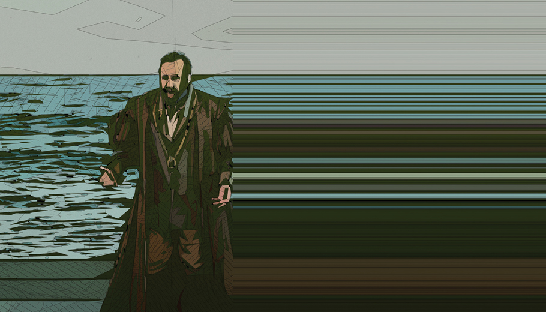
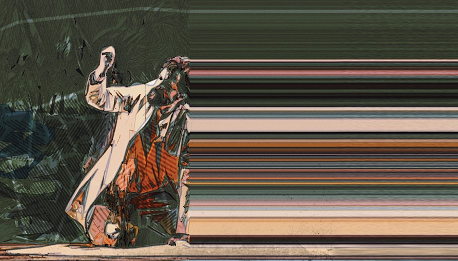

For the Love of Arts Philly
Opera Philadelphia
10 Days in a Madhouse
Description: Is she insane? Or just pretending? This psychological drama follows trailblazing reporter Nellie Bly through her internment at Blackwell's Asylum, exposing, as Bly did, notions of madness and societal biases against women. This world premiere from composer Rene Orth and librettist Hannah Moscovitch stars Kiera Duffy (Breaking the Waves) as Nellie, mezzo Raehann Bryce-Davis in her company debut as Lizzie, and baritone Will Liverman as Dr. Blackwell. Daniela Candillari makes her company debut at the podium, and Joanna Settle (Sky on Swings) directs. Designer Andrew Lieberman's set evokes the dark labyrinth of the asylum and Nellie's journey within its walls.
Date: September 21 - September 30, 2023
Time: 7:00 pm, 2:00 pm
Location: The Wilma Theater, 265 S. Broad Street, Philadelphia, PA
Buy Tickets
Simon Boccanegra

Description: A powerhouse cast and some of Verdi's most sumptuous music fuel this sweeping story that mixes political turmoil with poignant family drama. Baritone Quinn Kelsey stars as Simon Boccanegra, a leader coming into great power who must balance duty to his nation with his duties as a father after his long-lost daughter Amelia (soprano Ana María Martínez) reenters his life. Surrounded by poisonous rivals, can he be the man those who love him need him to be and survive the plots of those who hate him?
Date: September 22, 2023 - October 1, 2023
Time: 8:00 pm, 2:00 pm
Location: Academy Of Music, 240 S Broad St. Philadelphia, PA 19102
Buy Tickets
Curtis Voices
Description: Through imaginative productions, bold concepts, and absorbing theater, the artists of the Curtis Opera Theatre prepare to become stars of the world stage. The combination of key elements of artistry—music, acting, singing, and costumes—allows these student-artists to create a lasting connection with audiences. Hear Curtis graduate Amanda Majeski in recital on Friday, September 22, and current Curtis Opera Theatre students on Friday, September 29 at the historic and intimate Field Concert Hall.
Date: September 22, 2023 - September 29, 2023
Time: 4:00PM
Location: Field Concert Hall, 1726 Locust St, Philadelphia, PA 19103-6187
Buy Tickets
Unholy Wars

Description: Unholy Wars closes the dusty history book and reframes the Crusades from a Middle Eastern perspective to reveal a new story of belonging and resilience. Conceived and created by Lebanese American tenor Karim Sulayman, music by Handel and Monteverdi is interwoven with that of composer Mary Kouyoumdjian to explore and reclaim representations of his identity. Reexamining Baroque interpretations of the Crusades and depictions of the Middle East, Sulayman asks "Can we lean into the discomfort of our collective history while forging a new path forward?" This boundary-breaking piece premiered at Spoleto Festival USA, where critics called it "emotional" and "powerful." The intimate staging directed by Kevin Newbury, with visual narrative by Kevork Mourad, explores the tensions of history, representation, identity, and survival through music and dance.
Date: September 23, 2023 – October 1, 2023
Time: 8:00 pm, 7:00 pm
Location: The Suzanne Roberts Theatre, 480 S Broad St, Philadelphia, PA 19146
Buy Tickets
Afternoons at AVA
Description: Alumni of the Academy of Vocal Arts return to their old training ground and are joined by current Resident Artists of the prestigious institution for a recital series. Bass-baritone Musa Ngqungwana (AVA '14) headlines the recital on Saturday, September 23, while recent graduate and mezzo soprano Anne Marie Stanley (AVA '22) performs on Saturday, September 30, both with pianist Luke Housner. The Wednesday, September 27 recital will feature current AVA resident artists with pianist Michael Lewis.
Date: September 23, 2023 - September 30, 2023
Time: 4:00PM
Location: Field Concert Hall, 1726 Locust St, Philadelphia, PA 19103-6187
Buy Tickets
Giargiari Bel Canto Competition

Description: An evening of vocal fireworks and beautifully sung arias awaits you! Philadelphia’s own Academy of Vocal Arts (AVA) trains the world’s next generation of great opera singers. For over 40 years, this competition has showcased the brightest of up-and-coming opera stars. Join them for the annual favorite singing competition, where they’ll compete against each other in song. You’ll also have the opportunity to vote for your favorite singer!
Date: Oct 13, 2023
Time: 7:30 PM
Location: Perelman Theater, Inside the Kimmel Center, 300 S Broad St, Philadelphia, PA 19102
Buy Tickets
Madam Butterfly
Description: In this new production of Madame Butterfly, director Aria Umezawa constructs – and deconstructs – Puccini's fantasy of Japan, infusing the typical Westernized portrayal with Japanese history, culture, and artistry, while giving Cio-Cio-San a new sense of agency over her own story. Karen Chia-ling Ho and Anthony Ciaramitaro bring the achingly beautiful score to life as the young geisha Cio-Cio-San and U.S. Navy Lt. Pinkerton. Anthony Clark Evans, who impressed in the title role of Rigoletto, returns as Sharpless, with mezzo Kristen Choi (The Raven) as Suzuki and tenor Julius Ahn as Goro.
Date: April 26, 2024 - May 5, 2024
Time: 8:00 pm, 2:00 pm
Location: Academy Of Music, 240 S Broad St., Philadelphia, PA 19102
Buy Tickets
Curtis Opera Theatre: The Cunning Little Vixen
Description: The Curtis Opera Theatre’s 2023–24 season concludes with Janáček’s masterpiece, The Cunning Little Vixen, one of the most powerful operatic works of the 20th century. Led by a plucky heroine, this poetic parable celebrates the cyclical nature of life and death as it spins a comical yet bittersweet tale of Vixen Sharp Ears. Captured by a Forester, the mischievous young fox cub grows up to become a strong, independent vixen, escaping into the wild, where she encounters a forest full of possibilities. Janáček’s adaptation of the beloved Czech novella features a lushly orchestrated, folk-infused score bursting with boundless energy and an imaginative array of dazzling colors. The Cunning Little Vixen is sung in Czech with English supertitles.
Date: May 2 - May 5, 2024
Time: 7:30 pm, 3:00 pm
Location: Perelman Theater, Inside the Kimmel Center, 300 S Broad St, Philadelphia, PA 19102
Buy Tickets